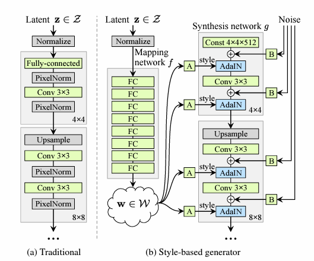
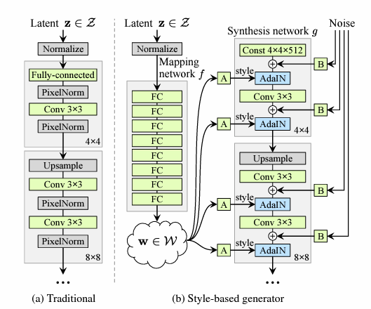

Identity vs Attributes swapping results (example)
Project Overview
- Field: Machine Learning / Computer Vision
- Model: StyleGAN
- Focus: Latent space manipulation & identity/attribute separation
- Output: Reconstructed faces combining identity from one image and attributes from another
- Year: 2024
What I Did
- Studied and implemented latent space mapping for identity/attribute disentanglement
- Worked with StyleGAN architecture and the W latent space
- Designed the training pipeline using generated samples
- Analyzed reconstruction quality and disentanglement behavior
- Collaborated on experiments, evaluation, and presentation of results
Technical Highlights
- GANs / StyleGAN architecture
- Latent space (W) manipulation
- Discriminator training for latent validation
- Reconstruction and comparison experiments
- ML pipeline design and evaluation
Diagrams & Visuals
 

Model / pipeline diagrams